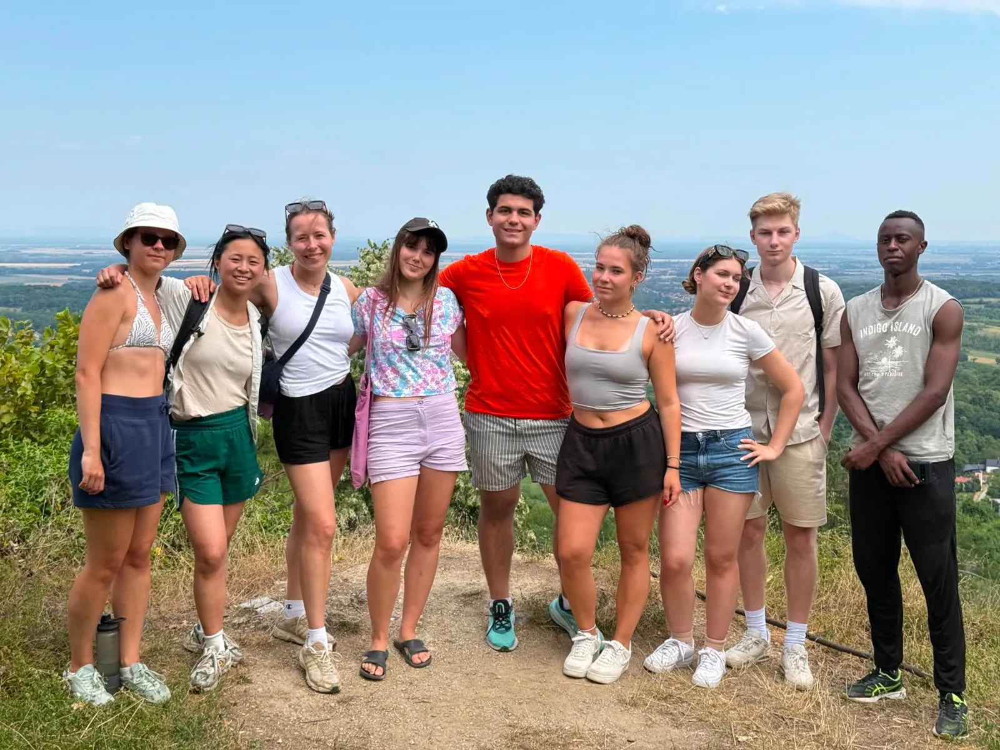

Demokracia zblízka
Workshopy, diskusie a simulácie sa venovali právnemu štátu, ľudským právam, slobode médií a fungovaniu demokratických inštitúcií. Skúmali sme, ako populizmus vzniká a ako sa prejavuje v každej z našich krajín.

Týždeň v Orahovici o populizme: čo to je, prečo funguje a ako kriticky premýšľať o politike a médiách.

Ako to prebiehalo
Workshopy, diskusie a simulácie sa venovali právnemu štátu, ľudským právam, slobode médií a fungovaniu demokratických inštitúcií. Skúmali sme, ako populizmus vzniká a ako sa prejavuje v každej z našich krajín.
V medzinárodných skupinách priniesol každý vlastný pohľad. Naučili sme sa rešpektovať odlišné názory, argumentovať vecne a viesť otvorený dialóg a naša angličtina bola každý deň istejšia.
Medzikultúrne večery priniesli jedlo, hudbu, tance a príbehy z každej krajiny. Pokojná Orahovica obklopená prírodou nám dala čas pri jazere a priateľstvá, ktoré pretrvajú aj po projekte.